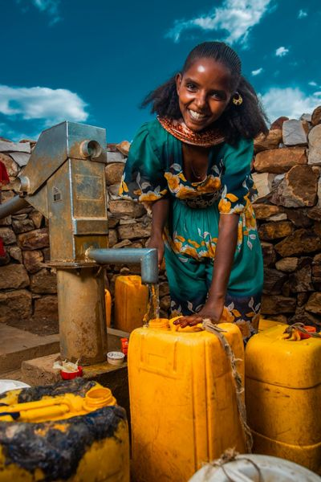
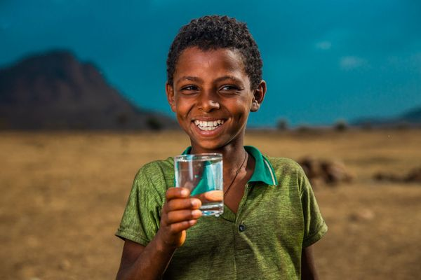

Join students who are turning passion into progress, one drop, one life at a time.
Donate Your ImpactWe make sure every dollar goes to clean water projects and show you the impact your support has on communities. Your donation makes a real change.

This campaign is built for students like Emma who care about transparency, real stories, and measurable impact. You are not just giving money. You are joining a movement that brings clean and safe drinking water to people who need it most.

Follow real stories from communities around the world and see how clean water transforms daily life, education, and health. Your support helps turn these stories into reality.
Donate NowJoin students who are ready to take action. Every drop counts, and every donation helps build a future where everyone has access to clean water.
Donate Now